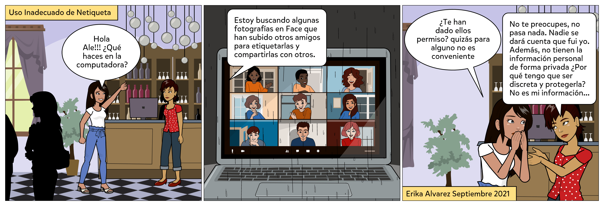
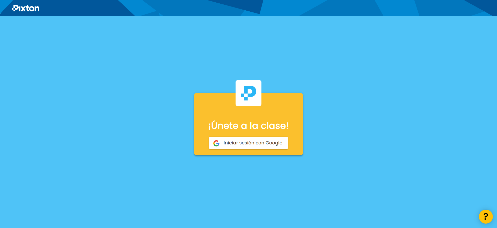
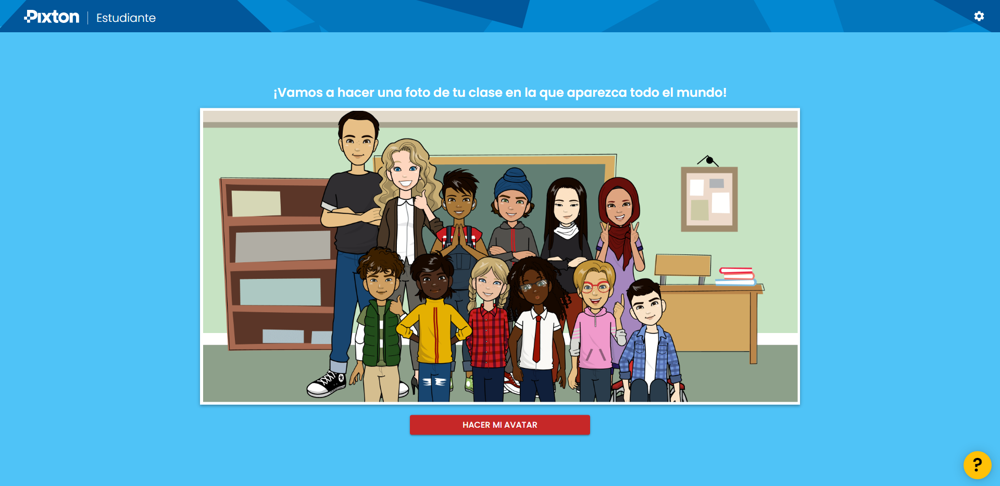
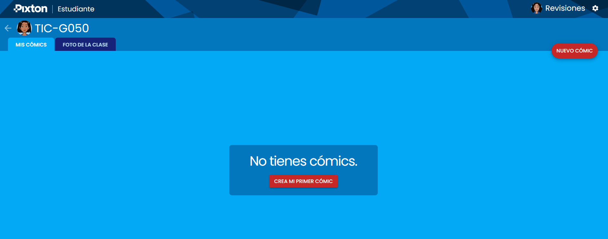
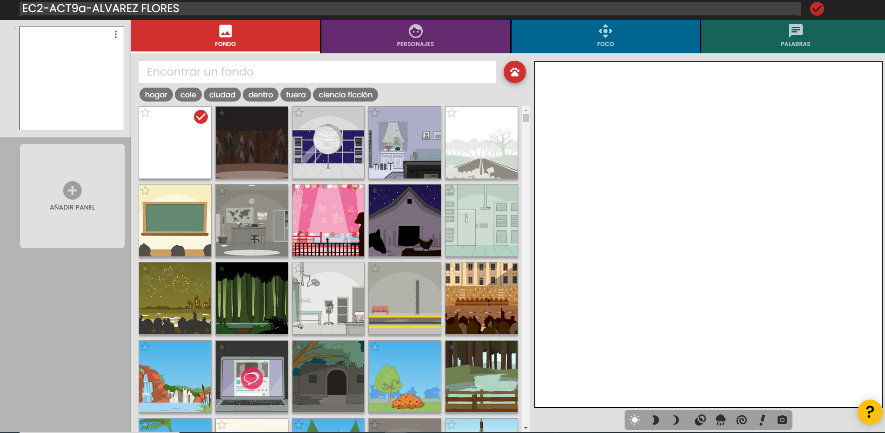
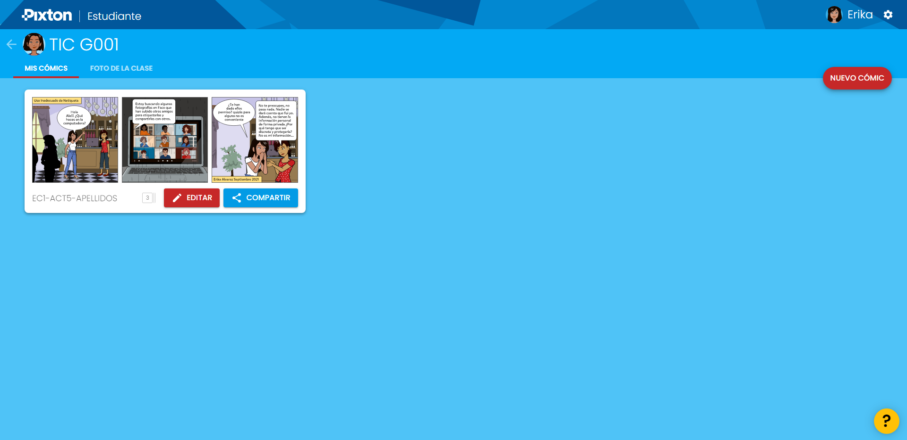

..
.
.
Diseñar de manera individual dos comics en el que se aborden reglas de comportamientos –Netiquetas- en espacios virtuales como blogs, correos electrónicos, redes sociales, etc.
Pasos para la preparación de la evidencia:
1. Hacer uso del material proporcionado en el área de Lectura Previa de este objeto de aprendizaje u otras fuentes confiables para identificar cuáles son las reglas o Netiquetas que deben aplicarse de forma responsable según el tipo de herramienta tecnológica, uso de la red, la información y el lenguaje.
2. Seleccionar dos herramientas tecnológicas para comunicación digital entre ellas Redes Sociales, Blog, Foros, Páginas Web, Videoconferencias, Correo electrónico, etc..
3. Con una de las herramientas seleccionadas, diseñar un guion para relatar una historia donde se muestre el uso incorrecto de una Netiqueta. Debe tener al menos 6 escenas utilizando la APP Pixton.
4. Con la segunda de las herramientas seleccionadas, diseñar otro guion para relatar en este caso una historia donde se muestre el uso correcto de una Netiqueta. Debe tener al menos 6 escenas utilizando la APP Pixton.
5. No pueden usar la misma Netiqueta (regla de comportamiento) en las dos herramientas tecnológicas. La selección tanto de las dos herramientas tecnológicas y las reglas de comportamiento para crear los comics, dependerá de cada estudiante. El diseño general a presentar también lo determina cada estudiante.
6. Los comics deben estar estructurados de manera clara y precisa. Con texto e imágenes apropiadas según la Netiqueta que deseen expresar. 7. Es obligatorio agregar como etiqueta de una de las escenas diseñadas dentro de PIXTON: nombre del estudiante y fecha, así como si es uso correcto o incorrecto.
8. El primer Comic debe llamarse Extra-APELLIDOS y el segundo comic que desarrollen debe ser Extrab-APELLIDOS.
Ejemplo. Primera herramienta seleccionada: Redes Sociales.

NOTA IMPORTANTE: No es obligatorio mostrar lo incorrecto para esta herramienta tecnológica, pueden considerar mostrar también la utilización correcta de la regla.
9. Una vez diseñada la historieta, descargar el comic en formato imagen para incluirlo como parte de un documento Word.
10. La evidencia final será enviada por medio de la Plataforma Educativa Institucional en formato Word con el nombre EXTRA-APELLIDOS y debe incluir: Portada, las imágenes de los 2 comics donde se representan las Netiquetas. Cada comic debe ir acompañado de una descripción de la Netiqueta y además, la descripción del tipo de comunicación digital que puede realizarse con la herramienta tecnológica seleccionada, de acuerdo a la siguiente clasificación: (1) comunicación de acuerdo a su ámbito (síncrono o asíncrono), (2) número de participantes, (3)forma de mensaje, (4)tipo de audiencia, (5)el tipo de mensaje, (6)el canal sensorial y (7)tipo de participación. Hacer una tabla para indicar estos puntos. Tiene que ser claro el porqué de ello.
Ejemplo de descripción de la Netiqueta:
Se identifica el uso inadecuado de la Netiqueta "Tener permiso antes de etiquetar fotografías de otras personas" para el ámbito de Redes Sociales.
| (1) comunicación de acuerdo a su ámbito (síncrono o asíncrono) | |
| (2) número de participantes | |
| (3) forma de mensaje | |
| (4)tipo de audiencia | |
| (5)el tipo de mensaje | Los mensajes emitidos pueden ser mediante lenguaje articulado (Verbal) o transmitirse mediante imágenes o sonidos. |
| (6)el canal sensorial | |
| (7)tipo de participación. | La comunicación que puede presentarse con esta herramienta tecnológica es tanto de forma unilateral como recíproca ya que puede o no existir una retroalimentación entre emisor y receptor. |
(La redacción dependerá de cada estudiante; serán 7 categorías de comunicación a considerar para la descripción, por lo que falta en este ejemplo información según el número de participantes, tipo de mensaje, canal sensorial, si es síncrona o asíncrona, tipo de audiencia).
.
Para esta actividad se trabajará en Pixton utilizando el enlace https://unirse.pixton.com/hmrttt que les llevará al espacio diseñado para la clase de TICs. Deben unirse a la clase por medio de su clave de usuario y contraseña de Google. Les recomiendo tener un usuario registrado para la utilización de aplicaciones, independiente al que tienen para otras cuestiones personales.

Una vez que proporcionen sus datos, les pedirá hacer su avatar. Solamente la vez que se inscriben les pedirá eso. Seleccionen cada una de las especificaciones solicitadas para diseñarlo: género, tipo de cabello, color, tipo de ojos, forma de cuerpo, expresión, etc.

Al concluir tu Avatar, te dará la oportunidad de hacer un comic. A partir de la segunda vez que entres al programa te llevará directamente al área personal para solicitar editar o crear uno nuevo.

La primera vez, da un clic a NUEVO COMIC o CREA MI PROPIO COMIC, los llevará al área de Edición donde podrán diseñarlo. En la parte superior pueden establecer el nombre. Para la práctica, deberán utilizar EC2-ACT9a-APELLIDOS al primer comic y dar un clic al icono de circulo rojo a mano derecha.
Tienen Menú de opciones para desarrollar el Comic: Fondo, Personajes, Foco y Palabras. En esta práctica deben Incluir como parte de los personajes a su AVATAR que generaron al inicio.
Selecciones los elementos que crean pertinentes. Una vez diseñado podrán guardarlo con el botón LISTO que se ubica en la parte superior derecha y los regresa al área personal que les permitirá Editar, Crear nuevo comic o Compartir alguno que tengan disponible.

Al solicitar mediante un clic el COMPARTIR tendrán la oportunidad de DESCARGAR, IMPRIMIR o COMPARTIR ENLACE al Comic. No olviden cerrar sesión cada ocasión que terminen de trabajar con la APP, a través del icono de engrane en la parte superior derecha junto a su nombre.
.